本地曲库
FLAC、WAV、AIFF、APE 无损，以及 MP3、AAC / M4A、OPUS、OGG、WMA。标题、艺人、专辑、内嵌封面与歌词可直接编辑并写回文件。

现代跨平台音乐播放器 (Windows & Android)
背景跟随封面自适应取色，流光缓缓流动。封面可以是圆角、黑胶唱片，也可以是像素。
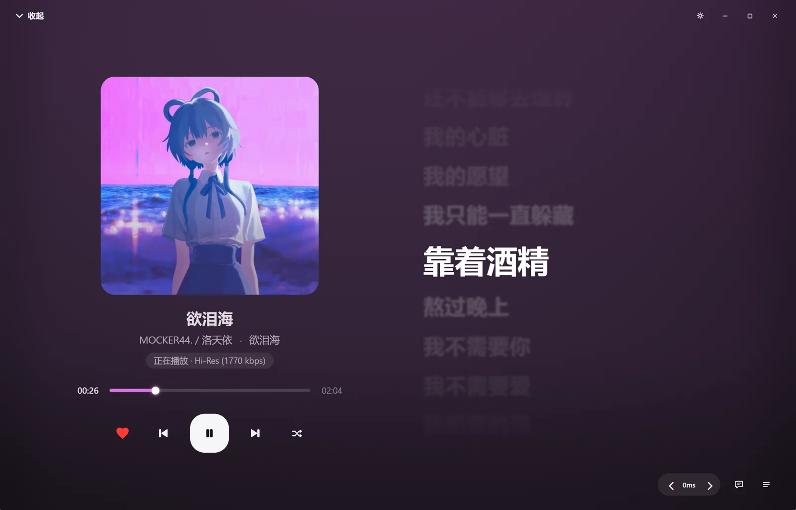
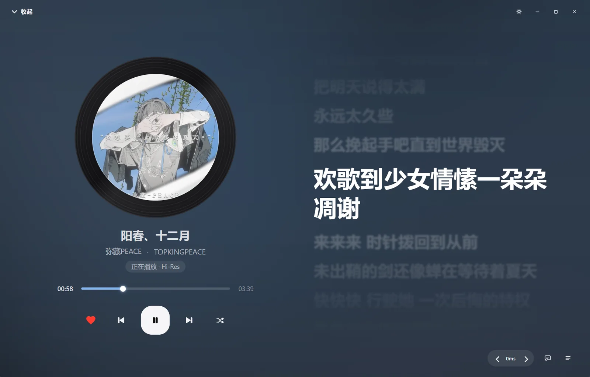
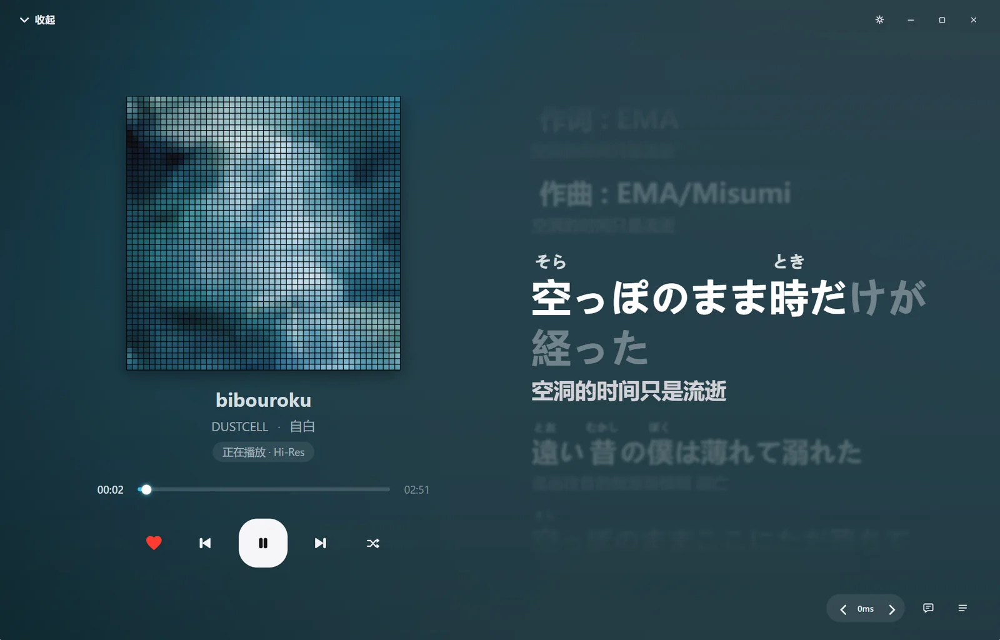
圆角封面 · 歌词逐句聚焦，非当前句自动虚化
两种界面主题，同一个曲库。本地歌单集中管理你添加的歌曲与红心收藏。
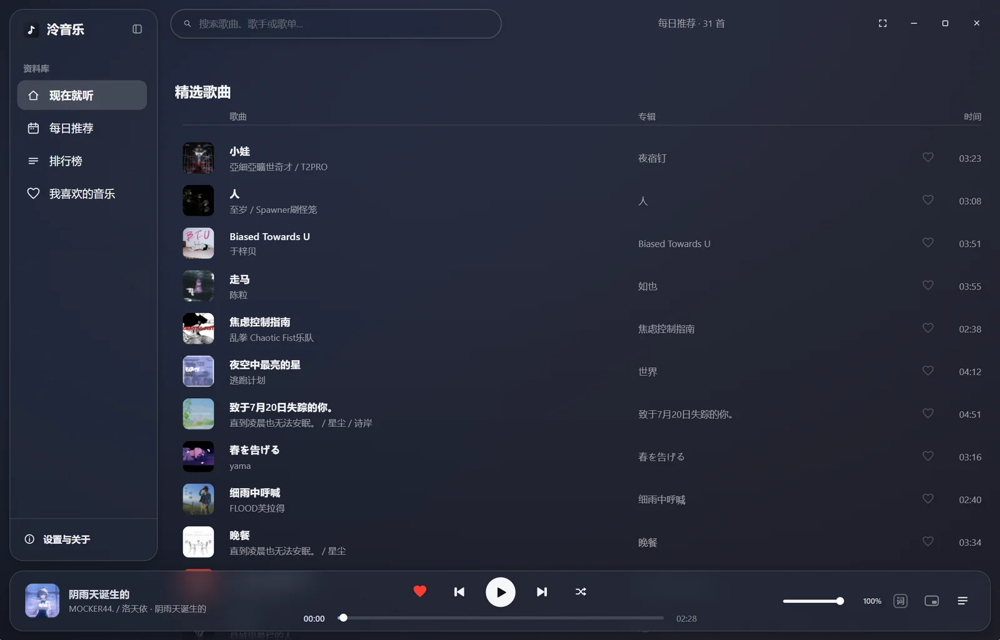
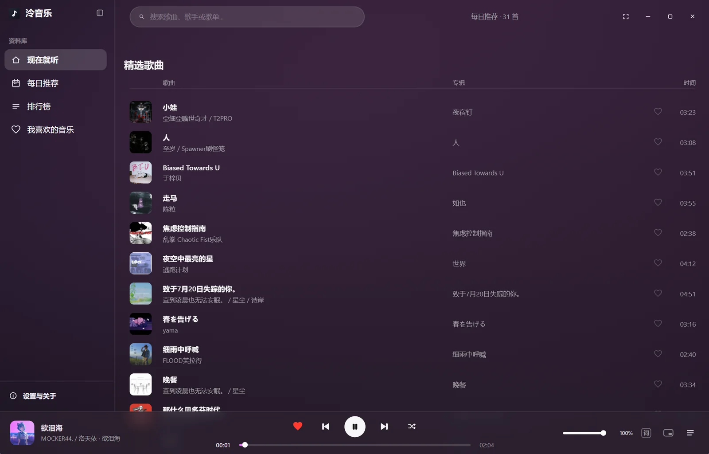
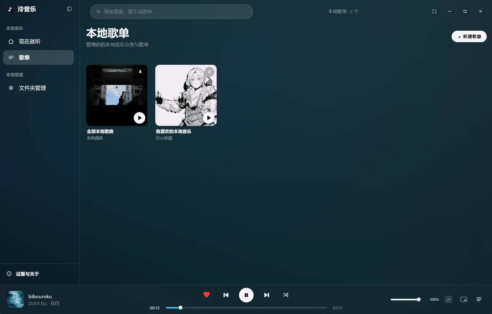
浮岛主题 · 侧栏、搜索与播放条悬浮在背景之上
每首歌都有自己的颜色：播放页的色调取自当前封面，换一首，换一种心情。
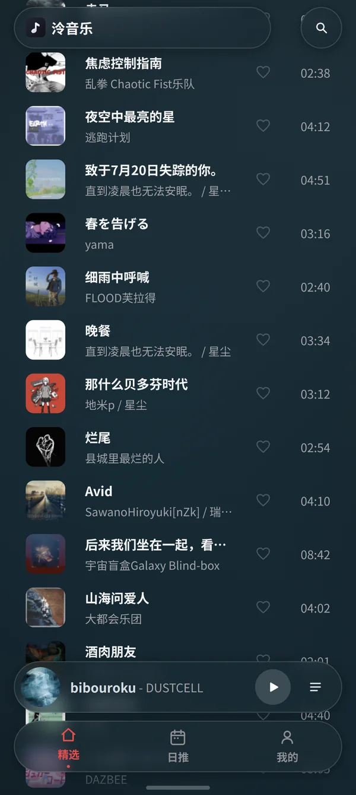
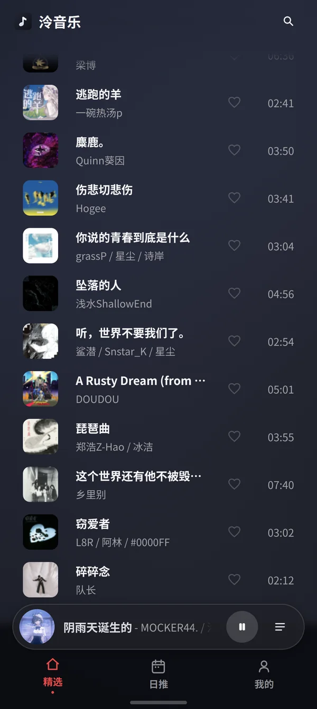
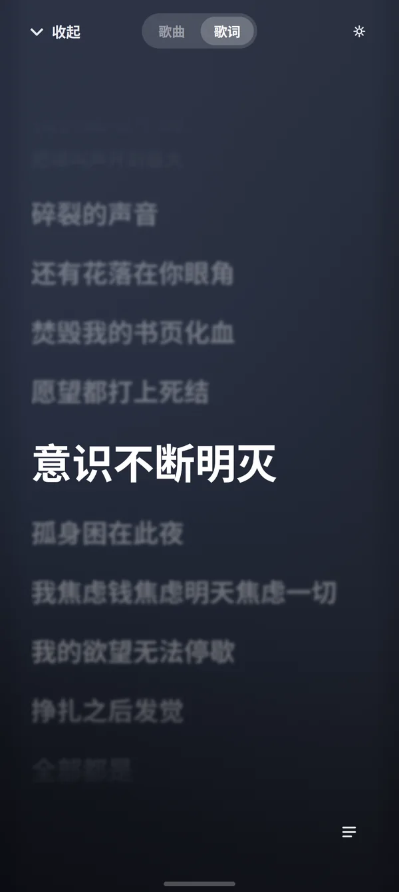
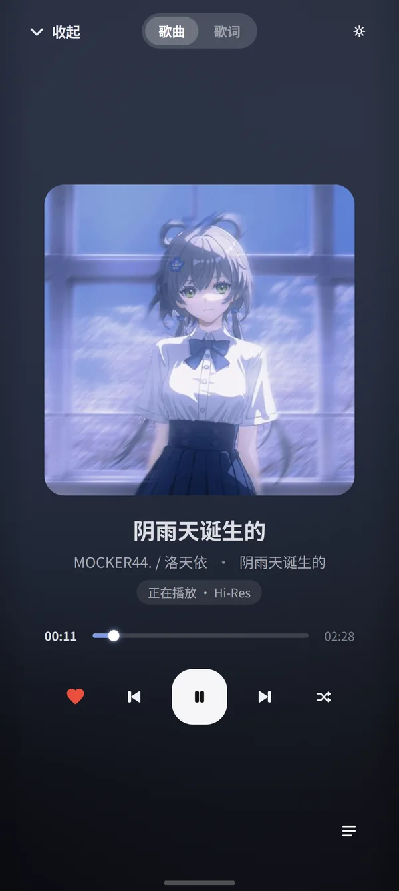
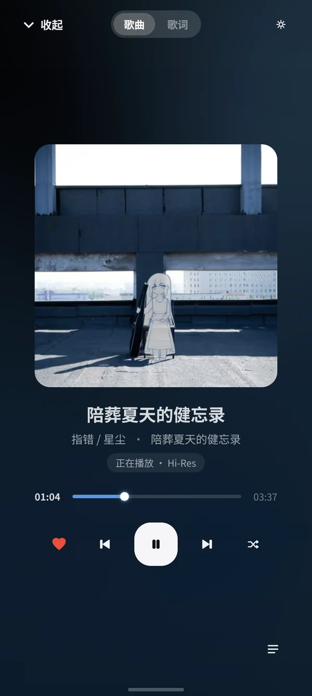
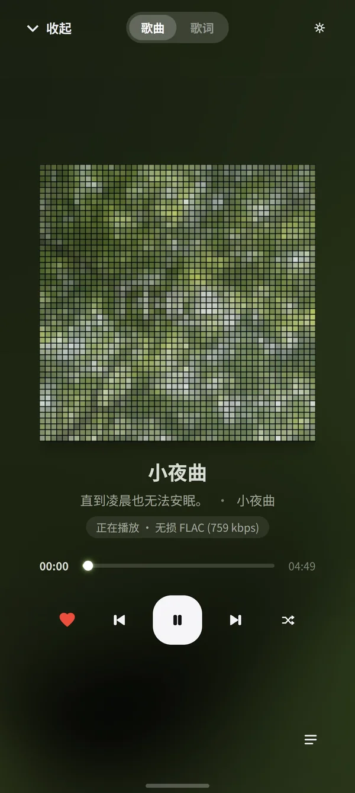
封面与歌词并排铺开；横屏时用封面流左右翻找下一首。
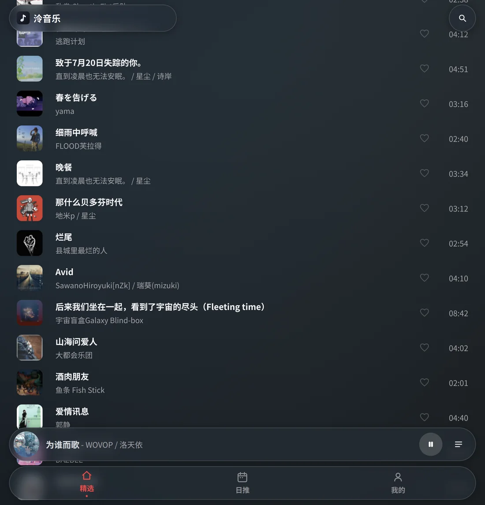
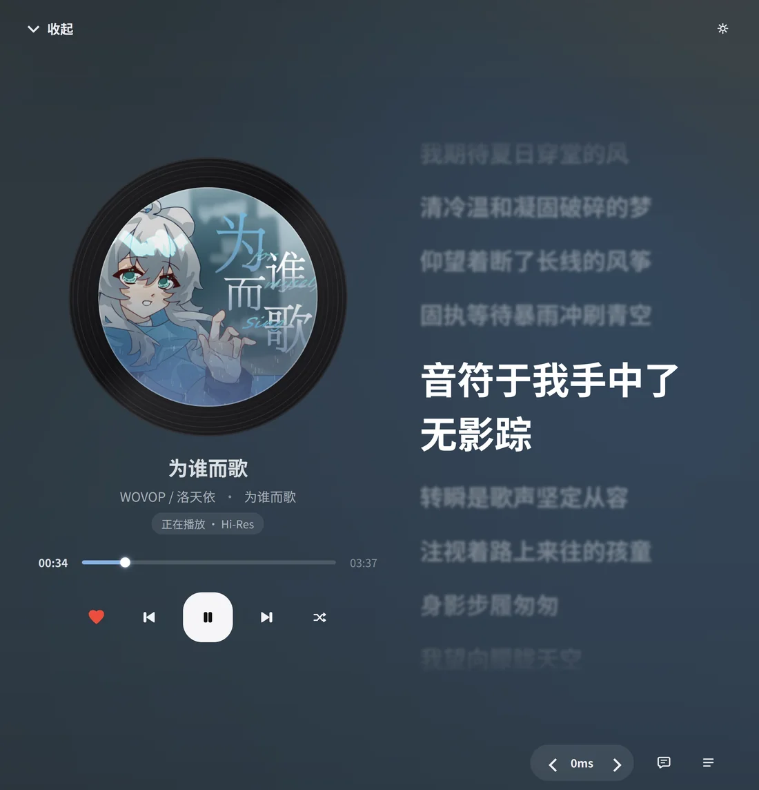
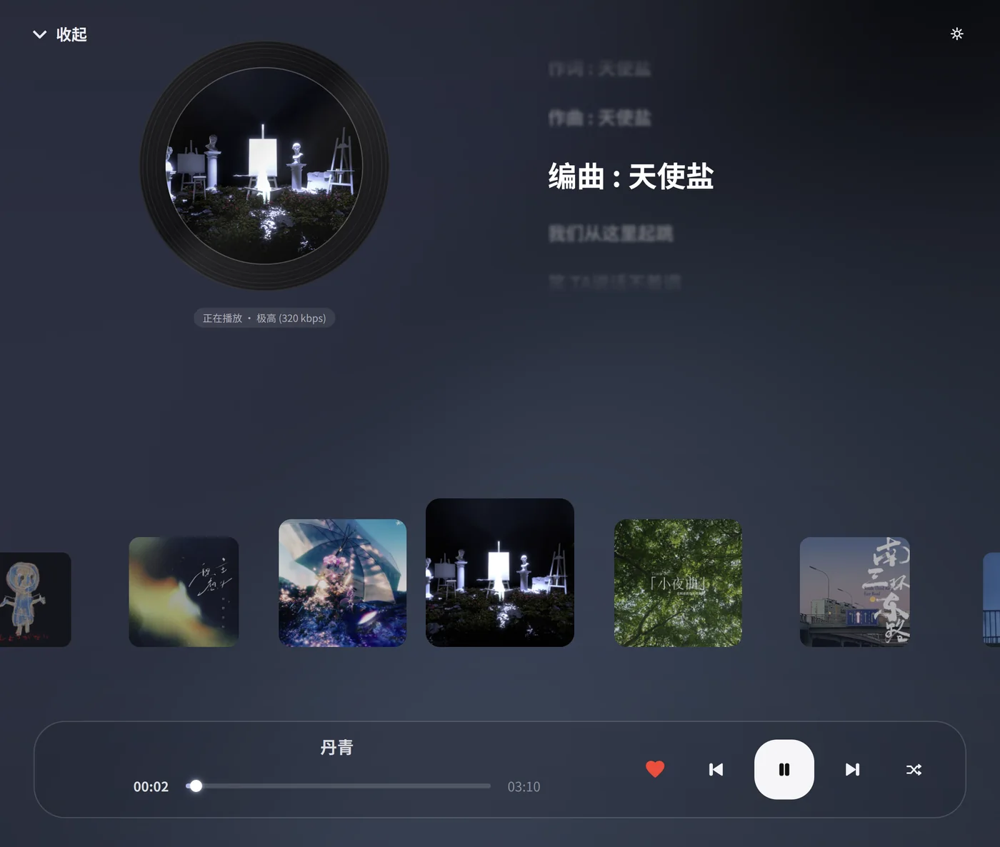
FLAC、WAV、AIFF、APE 无损，以及 MP3、AAC / M4A、OPUS、OGG、WMA。标题、艺人、专辑、内嵌封面与歌词可直接编辑并写回文件。
逐字高亮推进；日文歌词支持罗马音、平假名、片假名注音，并可开启双语翻译对照。
对齐、字号、字重任选；非当前句的字号、透明度、模糊分别设置；偏移按 50ms 步进微调。
扁平化、浮岛两种主题；流光、流沙、纯色三种背景；自然流动、平缓呼吸、静态沉浸三种动态。
Windows 端提供独立的桌面歌词窗口与迷你播放器窗口；移动端适配大屏与折叠屏悬停。
只读取你手动添加的文件夹，不做全盘扫描。没有遥测，没有行为追踪，没有广告。
两个平台的安装包都在同一个 Releases 页面，按文件后缀选择即可。
Windows 10 及以上 · x64
选 zip 文件，解压后运行 Ling.exe
Android 8.0 及以上 · ARM64
选 apk 文件，直接安装